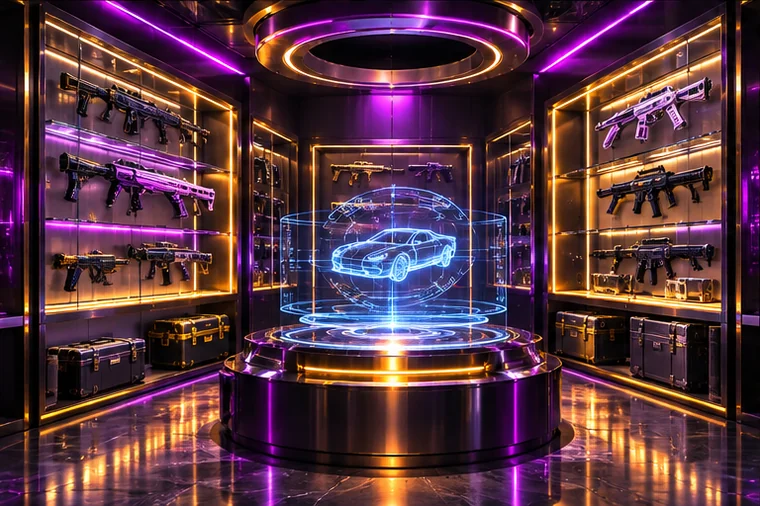
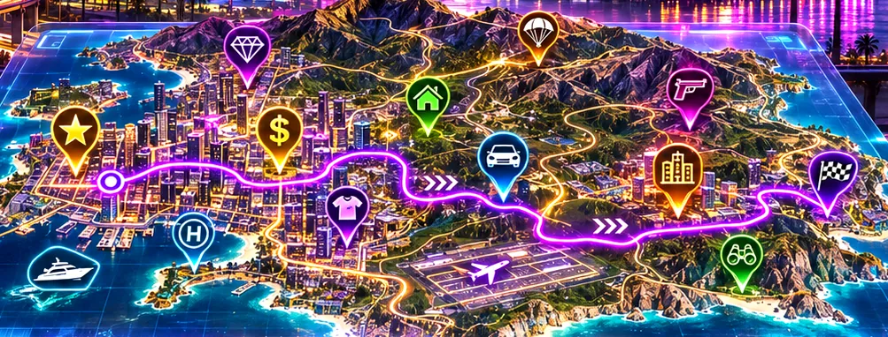

My Garage
Browse, collect and compare vehicles, then open the Elario Forge workshop.
ELARIO STUDIOS · TEAM JURA · MANY CREWS. ONE VISION.
MAPS · CHARACTERS · VEHICLES · COLLECTIBLES
Explore the officially released GTA VI world, choose a classic GTA era or continue your own Atlas. Every destination links to its real workspace.
Use lightweight homepageGTA VI launched November 19, 2026. Rockstar-confirmed facts are labeled separately from provisional community coordinates. Original Elario cinematic fan art · not an official GTA VI screenshot.
Browse, collect and compare vehicles, then open the Elario Forge workshop.

Explore the game-specific arsenal and track your private collection.
Open trailers, screenshots, the printable map and media downloads at Rockstar. Media is not played inside this preview.
Visit Rockstar media ›
Open the interactive map ›Leonida workspace · official poster and source-labeled community locations. Illustrative cover, not a gameplay map.
Every world · full name and alias search · Story and Online separate.
Browse All Characters ›ELARIO STUDIOS · LEARN BY EXPLORING
Before trusting a map pin or vehicle claim, check its evidence. Try our three interactive examples—no spoilers, account or personal data required.
Which evidence label fits the character's name?
Choose an evidence grade.
How should we label its coordinates?
Choose an evidence grade.
What is the correct status for that claim?
Choose an evidence grade.
Evidence applies to a specific claim: an officially named vehicle does not prove its spawn point or stats. Browse the source registry ›
All your original 13 maps, trackers, garages and community features remain available below.
START HERE · FOUR FEATURED WORLDS
INTERACTIVE MAP EXPLORER
Native map tools stay in their dedicated explorers. Sources, layers and progress depend on the chosen world.
THE COMPLETE GTA UNIVERSE · NINE MORE DESTINATIONS
Explore each game's original Elario Studios concept cover, then open its actual map or personal-world research workspace. Verified maps and progress capabilities vary by game.
TEAM JURA CREATIONS
YOUR ATLAS
These numbers reflect progress saved in this browser. Counts from overlapping trackers are not added together. No Rockstar account is connected.
Ready for your next adventure?
Open Atlas HQ ›ATLAS UPDATES · SAVED PROGRESS
We aim to publish website improvements during quieter hours when practical. Cloudflare Pages switches between site versions without a planned maintenance shutdown. You can keep exploring; changes may appear on your next visit or refresh.
Supported guest checklists, garages and mission notes save in this browser when device storage is available. They are not yet synced to an account. Before clearing browser data or moving devices, use the available export and backup tools.
Backup & progress options ›Optional secure sign-in and cloud sync are planned for a later phase. No login is required now.
THE ROAD TO LEONIDA
The Team Jura map collection includes native explorers and transparent reference gateways. A place labeled “research” is not a confirmed in-game location, and a schematic route is not street-by-street navigation.


 One Last Ride
One Last Ride